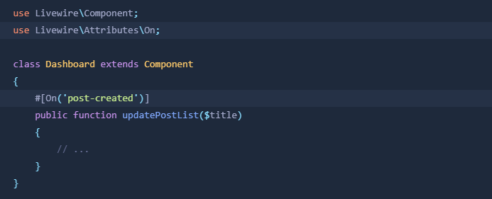

Imagina que tenemos un componente relacionado con otro en la misma página. Por ejemplo un componente encargado de mostrar Post show-post, y otro encargado de crear Post create-post.
Si creamos un Post con el componente create-post, es nesesario que quien se encarga de mostrar los Post se actualice ya que estamos en la misma pagina. Por defecto, show-post no se va a enterar que un Post fue creado por el otro componente. Para lograr que se entere debemos emitir un evento desde el componente create-post.
En Livewire 2, Livewire tenía dos métodos PHP diferentes para desencadenar eventos:
emit()
dispatchBrowserEvent()
Livewire 3 ha unificado estos dos metodos en uno solo:
dispatch()
Un evento se desencadena con el metodo dispatch(), que recibe el nombre del evento emitido:
Una vez emitido un evento, este debe ser escuchado por el otro componente de la siguiente forma:

En cualquier componente de livewire podemos escuchar los eventos mediante el objeto $wire que se hace disponible en una etiqueta script que se encuentre dentro de la directiva blade @script.